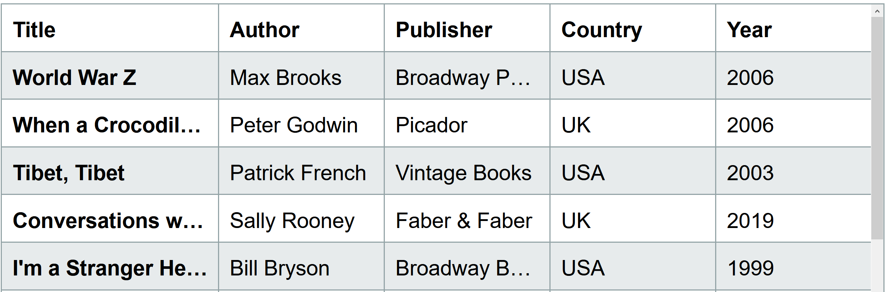
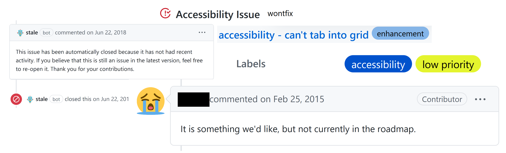

Debugging Broken Accessibility
This talk is not about:
- how to test
- how to fix specific bugs
- tooltips
This talk is about:
frustration.
But why?
A short diversion...
My learning process:
A better option:
Bug 1: the dreaded <table>

Inspect with Firefox:

Compare in the spec:

Bug 2: the screen reader should say...
Tools
 Inspect
Inspect- AI4Win
 Screen Readers
Screen Readers Specs
Specs Github issues
Github issues
Compare:
This applies to more than screen readers!
Compare against plain HTML for keyboard, pointer, High Contrast Mode, voice control, etc.
Do NOT do this:
<li aria-label="Home, 1 of 3">Home</li>
Bug 3: combobox is a four-letter word
Tools
- Inspect
- AI4Win
- Screen Readers
- Specs
- Github issues
Inspect, test, and compare:
Is this a good design?
Don't let designs get away with begging the question.
Bug 4: live regions are dead

Tools
- Inspect
- AI4Win
- Screen Readers
- Specs
- Github issues
Debugging the browser itself:
 Core AAM spec
Core AAM spec
Find or log issues:

Bug 5: Return of the <table>

A website is not an art gallery.
Digging up roots
"Begging the question"
"To ignore a question under the assumption it has already been answered."
The phrase itself comes from a translation of an Aristotelian phrase rendered as "beg the question" but meaning "assume the conclusion."
Table structure, HTML, and the value of front-end
Accessibility practitioner yells at cloud

Look at the structure, not the individuals:
- Is training in accessibility available?
- Is basic accessibility knowledge considered when hiring?
Bad Assistive Tech assumptions
<li aria-label="Home, 1 of 3">Home</li>
remember this?
Who is doing the testing?
- Are people with disabilities hired, and do they stay?
- Are your devs and testers only familiar with VoiceOver?
Why this combobox design?
- Are designers trained in accessibility?
- Are disabled designers hired?
- Did UX research exclude people with disabilities?
Tooltips in the real world

Is accessibility part of choosing 3rd-party libraries?
Check github for accessibility-related activity
Github checks anyone can do:
- Is there an accessibility or a11y label?
- How long do accessibility-focused issues remain open compared to other issues?
- Do accessibility issues get closed as fixed, or as stale/won't fix/etc.?
This sounds hopeful, but...

This talk is about:
frustration.
...but it's better with friends.